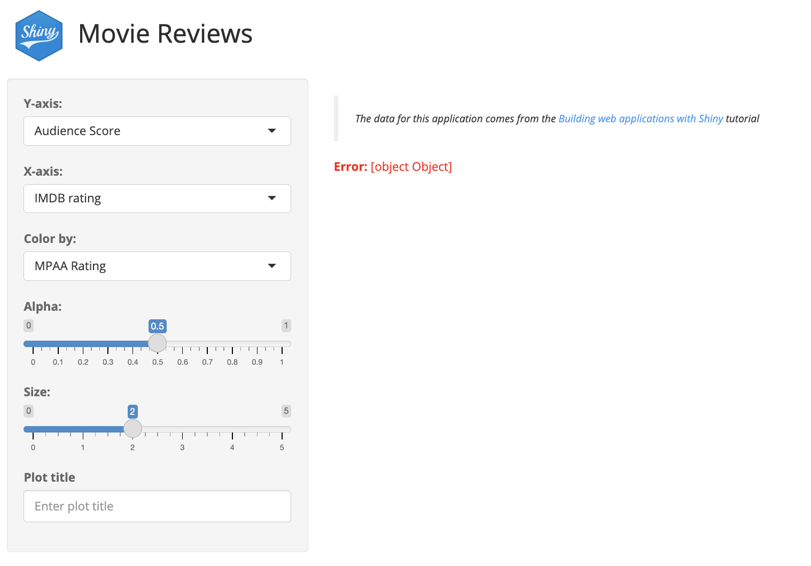
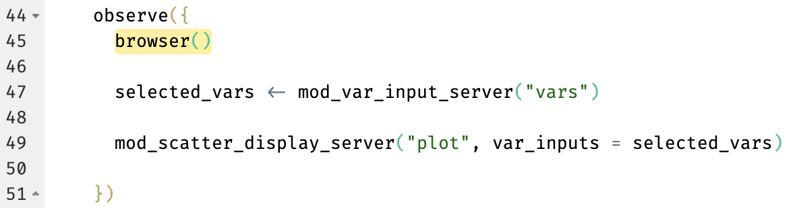
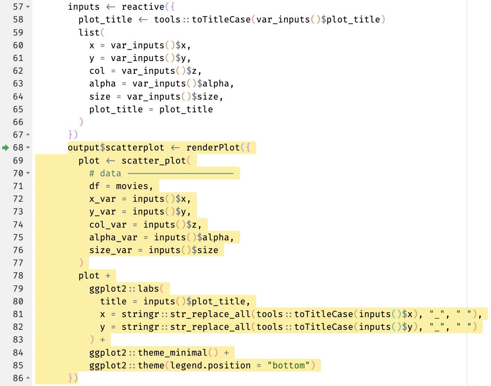
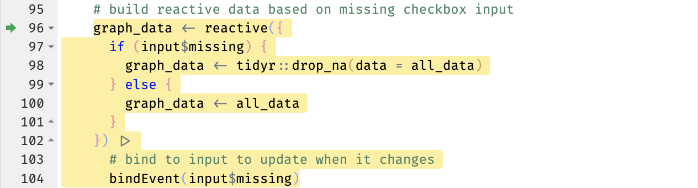
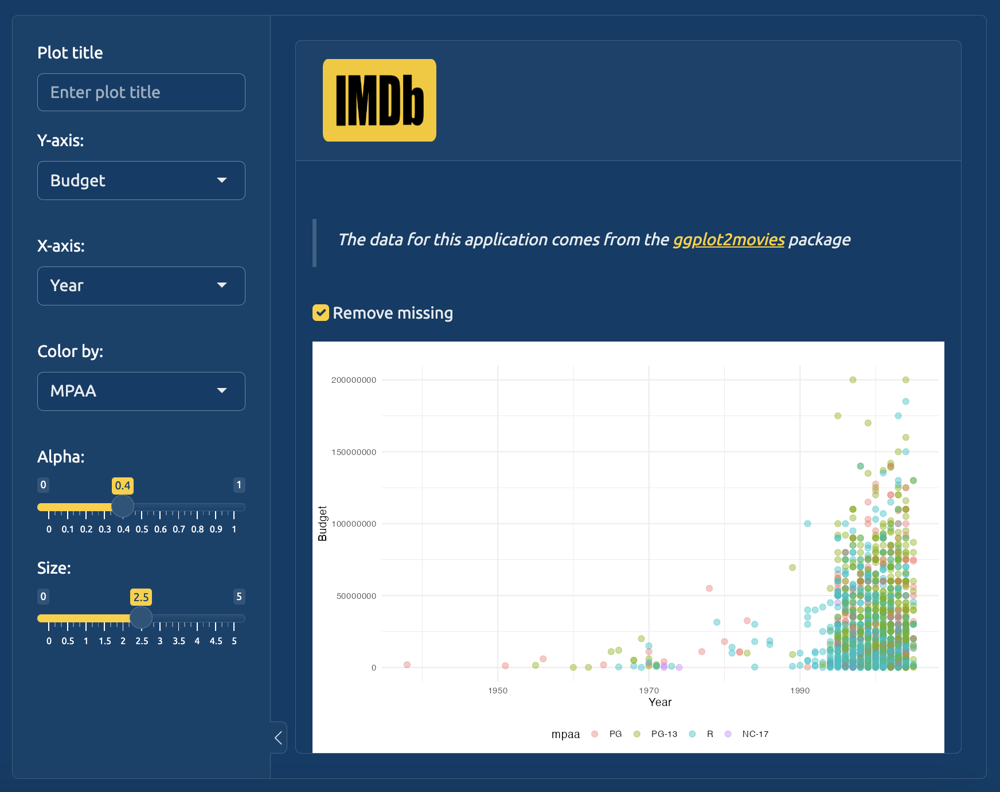
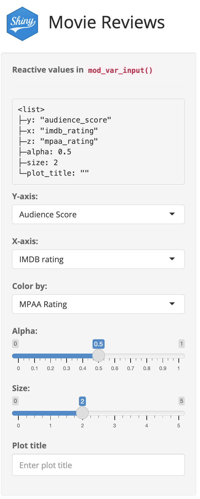
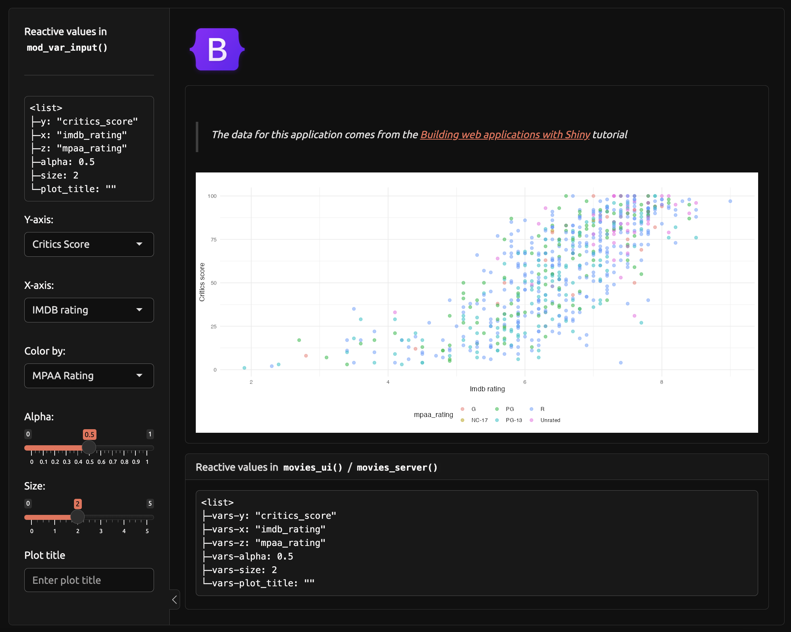

Debugging is an essential skill for R programmers, and it’s not restricted to fixing errors or broken code. When used as an exploration tool, the debugger allows us to ‘step inside’ functions and break them down line-by-line to see how the code executes.
18.1 Strategies
Posit Workbench’s debugging tools are covered elsewhere,1 so I’ll keep this chapter focused on what I use to debug Shiny code inside an R package (although these methods will work on any Shiny app):
Wrapping browser() in a call to observe()
Capturing reactive values with reactiveValuesToList() and sending output to the UI
These two methods cover 90% of my debugging needs while developing Shiny apps (and their accompanying tests). In the following sections, I’ll provide examples of how–and when–I use each method.
18.2 Debugging & Shiny
The contents of a Shiny app-package can quickly become a complicated and intertwined combination of utility, module, UI, server, and standalone app functions. During regular development, Posit Workbench’s interactive debugger lets us inspect variables and expressions at runtime, and execute the code line-by-line.
In Shiny functions, we can track the execution of reactive expressions and observers, which allows us to unravel reactivity-related issues that are often difficult to diagnose.
18.2.1browser()
browser() pauses code execution and activates the interactive debugger mode in the IDE, allowing us to view objects, execute code, and ‘step through’ each function line.
18.2.2observe()
observe() creates a reactive observer that ‘listens’ for changes to reactive expressions (and executes code in response).
Wrapping browser() with observe() will trigger the debugger when the observer is invalidated, allowing us to interactively examine variables and reactive expressions (within the scope of the observe() function):
Call to browser() (called at the top of the observe() scope)
Debugging reactivity
Shiny’s reactive model can make debugging challenging because the issues aren’t limited to logic or calculations, but also include the timing, sequence, or creation of reactive values.
Don’t forget to load any debugging calls with devtools::load_all()before re-launching the app:
Let’s start by debugging the scatter plot display in our primary standalone app function, movies_app(). Suppose we’re seeing the following error when we try to run the application from the Console:
movies_app(test =FALSE)

(a) Error in movies_app()
Figure 18.1: Errors in the UI are not always informative…
The error in the UI is not very descriptive, but fortunately the following warning is also returned in the Console:
Warning: Error in ggplot2::geom_point: Problem while computing aesthetics.ℹ Error occurred in the 1st layer.Caused by error in `.data[[NULL]]`:! Must subset the data pronoun with a string, not `NULL`.
When debugging Shiny apps, my goal is to locate the source of most informative error message. In movies_app(), I know the scatter_plot() function is called from within the scatter plot display module, which is called from movies_server(), so it’s hard to know exactly where this error is coming from:2
Then we’ll load the package and display the app in the Viewer pane (below the Console):
Ctrl/Cmd + Shift + L
ℹ Loading moviesApp
movies_app(options =list(test.mode =FALSE), run ='p')
ℹ shinyViewerType set to pane
The application launches, but browser() pauses the execution of the modules and activates the IDE’s debugger:
(a) Debugger with call to browser() inside observe()
Figure 18.2: Note that the plot hasn’t rendered in the application yet because the call to observe(browser()) suspends the execution of any subsequent code
This allows us to view the objects that are available in movies_server()before the variables are passed to the graph rendering functions.
In the Source pane, we can see the call to browser() highlighted (telling us the Browse[1]> location in this function).

(a) R/movies_server.R with observe(browser())
Figure 18.3: Because browser() was called inside observe(), the execution will pause, and we can interactively examine values
18.3.1 Module communication
In movies_server(), the variable input module returns a reactive list (selected_vars) with the variable names (input$x, input$y, input$z), graph aesthetics (input$alpha and input$size), and an optional plot title (input$plot_title).
Reactive values returned from variable input module
2
Variable inputs passed to scatter plot display module
In the debugger, we want to confirm the returned values from the variable input module, selected_vars, which requires us to execute the next two lines of code:
(a) Execute the function line-by-line with n to create selected_vars
Figure 18.4: Click the Next icon twice to create selected_vars
Now we can inspect selected_vars in the debugger console:
Browse[2]> selected_vars
reactive({ list(y = input$y, x = input$x, z = input$z, alpha = input$alpha, size = input$size, plot_title = input$plot_title )})
This output shows that selected_vars (without parentheses) contains the method (i.e., the reactive list of inputs), and not the actual values.
If we check selected_vars() (with parentheses) in the debugger, we see this contains the values from the variable input module:
These two steps confirm that the UI values are being collected by the variable input module and stored in selected_vars, so the error must be coming from inside the scatter plot display module.
We’ll repeat a similar process in mod_scatter_display_server(), but include the call to observe(browser())aftermoduleServer(). Then we’ll load the package and run the application again:
Now that we’ve confirmed var_inputs() has been created, we’ll verify the values are passed correctly fromvar_inputs()toinputs() (which is used to create the scatter plot).
To do this, we’ll progress through the module function (using n in the debugger console or by clicking Next) until the inputs() reactive has been created,

(a) Progressing pastinputs() tells us it’s been created
Figure 18.5: Use n in the debugger or click Next to progress through the function
These two steps have shown us 1) the modules are communicating properly, and 2) the scatter plot display module contains the list of reactive values needed to render the graph.
After some examination, we can identify the source of the error.3
Debugging shiny functions
If a module or standalone app function is producing a bug (i.e., failing to render an output, producing an error in the Console, etc.), I start by placing a call to browser() (wrapped in shiny::observe()) at the top-level UI/server functions, then procced ‘down’ into the modules.
18.5 Exploring code
observe() and browser() aren’t only useful for addressing bugs–we can also use the debugger to understand how an application works.
Suppose it’s been awhile since we’ve looked at the ggplot2movies::movies version of movies_app() (run with ggp2_movies_app()). We can place calls to observe(browser()) in the inst/dev/app.R file, load the package, and run the application to see how it executes.
We’ll wrap the code in dev_mod_scatter_server() in observe(), and place a call to browser() before the alternate dataset is loaded:
ggp2_movies_app(options =list(test.mode =FALSE), run ='p')
This will suspend the execution of application before the tidy ggplot2movies::movies data are loaded (tidy_movies.fst), and before the graph is rendered:
Debugging dev_mod_scatter_server()
ggp2_movies_app() in interactive debugger
We can step through the module function to explore how the alternate data are loaded (and missing values are removed).
18.5.0.1 Verify app data
First we’ll proceed through the code until tidy_movies.fst is loaded, then confirm it’s structure:
Browse[2]> nBrowse[2]> nBrowse[2]>str(all_data)
'data.frame': 46002 obs. of 8 variables: $ title : chr "'Til There Was You" ...$ length : int 113 97 98 98 102 120 ...$ year : int 1997 1999 2002 2004 ...$ budget : int 23000000 16000000 ...$ avg_rating: num 4.8 6.7 5.6 6.4 6.1 ...$ votes : int 799 19095 181 7859 ...$ mpaa : Factor w/ 5 levels "G","PG" ...$ genre : Factor w/ 8 levels "Action"...
This gives us an idea of the total rows before missing are removed.
18.5.0.2 Verfiy missing
After loading all_data, the module creates a reactive graph_data(). We can see graph_data() is ‘bound’ to input$missing, so we’ll confirm the input$missing value:

Browse[2]> input$missing
[1] TRUE
This tells us ‘Remove missing’ has been selected, and we can verify the missing values have been removed from graph_data():
Browse[2]> nBrowse[2]>str(graph_data())
'data.frame': 1608 obs. of 8 variables: $ title : chr "'Til There Was You" ...$ length : int 113 97 98 98 102 120 ...$ year : int 1997 1999 2002 2004 ...$ budget : int 23000000 16000000 ...$ avg_rating: num 4.8 6.7 5.6 6.4 6.1 ...$ votes : int 799 19095 181 7859 ...$ mpaa : Factor w/ 5 levels "G","PG" ...$ genre : Factor w/ 8 levels "Action"...
18.5.0.3 Verfiy variable inputs
Next we’ll confirm the var_inputs() list of graph values from our dev variable input module:
Browse[2]>str(var_inputs())
List of 6$ x : chr "year"$ y : chr "budget"$ z : chr "mpaa"$ alpha : num 0.4$ size : num 2.5$ plot_title: chr ""
var_inputs() is creates the inputs() reactive for the graph, so we’ll confirm those values, too.
Browse[2]> nBrowse[2]>str(inputs())
List of 6$ x : chr "year"$ y : chr "budget"$ z : chr "mpaa"$ alpha : num 0.4$ size : num 2.5$ plot_title: chr ""
18.5.0.4 Verfiy graph
Now that we have an understanding of the reactive flow inside the app, we’ll render the plot:
Browse[2]> n

Using browser() to ‘step through’ an application gives us a better understanding of the ‘order of execution’ in our dev scatter plot display module, (and it lets us see how input$missing and bindEvent() are working).
One of the best tried and tested methods of debugging is simply adding a cat() or print() call somewhere in your code to print variables or objects to the R console. This is a basic but effective way to track variable changes.
We can do something similar in Shiny applications by combining verbatimTextOutput(), renderPrint(), and reactiveValuesToList():
In a renderPrint(), use reactiveValuesToList() to gather the inputIds and pass them to print() (I’m actually using lobstr::tree() to give a clearer display).
movies_app(options =list(test.mode =FALSE), run ='p')

(a) ‘Print’ in movies_app()
Figure 18.7: reactiveValuesToList() printed from mod_var_inputs
Now we can see the reactive values from our module in the application sidebar!
18.6.1 Exploring app ‘levels’
We can also use this ‘print’ method to explore reactive values at various locations in our application. For example, if we wanted to print the reactive values for multiple modules in an app, we can use these methods in the top level movies_ui() and movies_server() functions.
Figure 18.8: reactiveValuesToList() printed from movies_ui() and movies_server()
Here we can see both levels of reactive values (from the module and the UI/server functions). The handy thing about this method is that the values change when we interact with the application:

(a) Changing values in movies_app(bslib = TRUE)
Figure 18.9: y and vars-yboth update when the UI inputs change
18.7 Recap
browser() and observe() are powerful tools for debugging your application. Navigating a function using the debugger console gives you control over the execution of each line. If we want to see what’s happening ‘behind the scenes’, we can collect the reactive values and print them in the UI while the app is running.
The Shiny documentation also has a list of methods for debugging apps, and learning how to read call stacks (or a stacktrace) will help you debug your shiny app.4